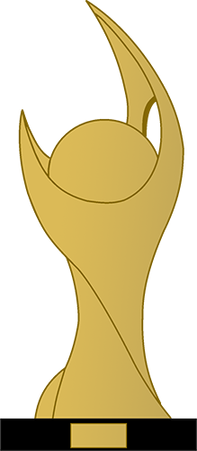

História do Clube
O Club de Regatas Vasco da Gama é uma das instituições esportivas mais emblemáticas e históricas do Brasil. Fundado em 1898, no Rio de Janeiro, o clube tem uma trajetória rica que transcende conquistas esportivas, abraçando também valores sociais e culturais que o tornam uma parte integral da identidade carioca e brasileira. O Vasco da Gama é conhecido não apenas pelo seu sucesso no futebol, mas também por sua dedicação ao remo, esporte que deu origem ao clube. A paixão pelo remo é evidente em seu nome, uma homenagem ao navegador português Vasco da Gama, cuja coragem e determinação refletem os ideais de superação e conquista que o clube busca inspirar. Ao longo de sua história, o Vasco acumulou uma impressionante coleção de títulos, incluindo campeonatos estaduais, nacionais e internacionais. O clube se destaca não apenas pelos feitos esportivos, mas também por seu compromisso com a inclusão social e o desenvolvimento comunitário. Desde seus primórdios, o Vasco tem sido um defensor dos direitos sociais, sendo pioneiro na inclusão de jogadores afro-brasileiros em um tempo em que o racismo era predominante no esporte brasileiro. Além do futebol e do remo, o Vasco da Gama possui outras modalidades esportivas, como basquete, vôlei, atletismo e natação, oferecendo oportunidades para atletas de diversas disciplinas. Fora dos campos e das águas, o Vasco tem uma vibrante e apaixonada torcida, conhecida como "Vasco da Gama" ou "Vascão", que apoia o clube com fervor em todas as suas jornadas. Assim, o Club de Regatas Vasco da Gama não é apenas um clube esportivo; é um símbolo de perseverança, inclusão e paixão, que continua a deixar uma marca indelével no panorama esportivo e social do Brasil.
Fundação e Evolução do Vasco
O Club de Regatas Vasco da Gama, um dos clubes mais emblemáticos do Rio de Janeiro e do Brasil, teve sua origem marcada por um espírito de resistência e inclusão que o acompanha até os dias de hoje. Fundado em 21 de agosto de 1898 por um grupo de remadores portugueses radicados no bairro da Tijuca, o Vasco da Gama surgiu como uma resposta às restrições impostas pelos clubes de elite da época, que praticavam uma política de exclusão social e étnica. Assim, o Vasco nasceu com o propósito de acolher a todos, independentemente de sua origem ou condição social. O nome do clube homenageia o explorador português Vasco da Gama, simbolizando coragem, pioneirismo e a busca por novos horizontes, valores que seriam incorporados ao longo de sua história. Inicialmente focado nas atividades de remo, o Vasco da Gama rapidamente expandiu suas atividades para outras modalidades esportivas, como o futebol, tornando-se uma potência poliesportiva. Ao longo das décadas, o clube cresceu e se fortaleceu, acumulando conquistas importantes no esporte nacional e internacional. No futebol, por exemplo, o Vasco da Gama é conhecido por seus feitos históricos, como a conquista da Libertadores da América em 1998 e outros títulos expressivos ao longo de sua trajetória. Além do esporte, o Vasco da Gama sempre teve um papel social relevante, engajando-se em causas comunitárias e educacionais, promovendo o desenvolvimento de jovens atletas e apoiando iniciativas de inclusão social. Atualmente, o Club de Regatas Vasco da Gama continua a ser um símbolo de perseverança e identidade para seus torcedores, mantendo vivos os ideais de seus fundadores. Com uma base sólida de tradição e uma visão voltada para o futuro, o Vasco da Gama segue sendo um dos clubes mais amados e respeitados do Brasil, deixando um legado de inspiração e orgulho para as gerações presentes e futuras.
Títulos Internacionais
| Competição | Títulos | Temporadas |
|---|---|---|
 Torneio Octogonal Rivadavia Corrêa Meyer
Torneio Octogonal Rivadavia Corrêa Meyer
|
1 | 1953 |
 Campeonato Sul-Americano de Campeões
Campeonato Sul-Americano de Campeões
|
1 | 1948 |
 Copa Libertadores da América
Copa Libertadores da América
|
1 | 1998 |
|  Copa Mercosul | 1 | 2000 |
Linha do Tempo
-
1898
fundado em 21 de agosto de 1898 por um grupo de remadores que, inspirados nas celebrações do quarto centenário da descoberta do caminho marítimo para as Índias, ocorrida em 1498, batizaram a nova agremiação com o nome do heroico português que alcançara tal feito, o navegador Vasco da Gama.

-
1903
O primeiro escudo do Vasco foi criado na administração do presidente Alberto Carvalho. Era redondo, fundo negro com a caravela ao centro. Em volta do fundo negro, um círculo com as iniciais C.R. e Vasco Da Gama, separados por seis cruzes de Cristo em vermelho.

-
1904
Primeiro na história dos clubes esportivos do Brasil a ter elegido um presidente "não-branco", o mulato Cândido José de Araújo.

-
1915
No dia 26 de novembro o Vasco da Gama incorpora o Lusitânia Futebol Clube.

-
1921
No mês de março o Vasco vence o Helênico por 4 a 2 e conquista seu primeiro título no futebol. Foi pelo Campeonato Carioca dos segundos quadros da segunda divisão.

-
1922
Vasco conquista a Série B da Primeira Divisão.

-
1923
Com excelente campanha, o clube conquista o campeonato carioca da LMDT no seu ano de estréia.

-
1927
Em 21 de abril, o Vasco da Gama inaugurava o então maior estádio do Brasil, o Estádio de São Januário, construído em dez meses.

-
1929
Inaugura a iluminação do Estádio de São Januário.

-
1931
Vence o Flamengo por 7 a 0 no dia 26 de abril; a maior goleada já ocorrida entre os dois rivais.

-
1947
Em 06 de setembro, o Vasco vence o Canto do Rio por 14 a 1 - a maior goleada aplicada do clube - em jogo do campeonato carioca.

-
1948
Conquista o Campeonato Sulamericano de Clubes Campeões (reconhecido pela Conmebol como competição continental) ao empatar com o River Plate (ARG) por 0 gol, em 14 de março.

-
1949
25 de maio. Mais de 60 mil pagantes assistiram a vitória do Vasco sobre o Arsenal, a poderosa equipe de Londres/ING, por 1 a 0, em jogo realizado no Estádio de São Januário.

-
1951
Ao derrotar o América, no dia 28 de janeiro, com dois gols de Ademir Menezes, o Vasco se sagrou campeão do primeiro Campeonato Carioca realizado no Maracanã.

-
1957
Pelé veste a camisa do Vasco, um combinado entre o Santos e Vasco.
-
1967
A exemplo de Pelé, Garrincha veste a camisa do Vasco, em uma partida contra a Seleção de Cordeiro (RJ). Garrincha fez um gol na vitória vascaína por 6 a 1.

-
1985
Romário estreou pelo Vasco da Gama como jogador profissional. Formado nas categorias de base do clube, o baixinho tinha faro de gol e no time principal passou a formar uma dupla de ataque fatal com Roberto Dinamite.

-
1993
24 de março. Roberto Dinamite, o maior ídolo da história do Vasco se despedia dos gramados em amistoso disputado no Maracanã contra a equipe espanhola do Deportivo La Coruña, que venceu os vascaínos por 2 a 0.

-
1998
Centenário do clube e conquista da Libertadores.

-
2006
Marta, jogadora revelada pelo Vasco, é eleita a melhor do mundo pela FIFA. A partir dai a magnífica jogadora não parou mais, e conquistou o troféu de melhor do mundo por várias vezes.

-
2007
Outro fato marcante na história do futebol mundial ocorre em São Januário. Romário marca o milésimo gol na sua carreira. O baixinho que era gigante na grande área decidiu encerrar a sua carreira no clube que o revelou, além de escolher o clube da Colina para ser o time onde ia marcar o tento de número 1000 na sua trajetória. A meta foi batida contra a equipe do Sport, em partida válida pela segunda rodada do Campeonato Brasileiro, no dia 20 de maio. Às 19h17 e com o estádio lotado, o jogador de 41 anos partiu para a cobrança com a frieza de sempre. E como já era de costume, colocou a bola longe do alcance de Magrão, que pulou para o lado direito, em direção oposta ao do chute..

-
2008
Sofre o golpe mais duro de sua história ao ser rebaixado no Brasileirão (Série A) - pela primeira vez - para a segunda divisão (Série B) de 2009.

-
2009
Conquista a Série B do Brasileiro, retornando para a Série A de 2010

-
2012
Vasco 9 x 1 Barcelona/EQU (28 de março de 2012). O amistoso marcou a despedida de Edmundo com a camisa vascaína. Um dos maiores ídolos da história do clube, teve em seu último jogo, São Januário lotado (21.247 torcedores presentes) e uma atuação de gala, tendo marcado 2 gols.

-
2013
Péssima campanha na Série A do Brasileiro deste ano leva o clube a ser - novamente - rebaixado para a segunda divisão do brasileiro - a Série B de 2014.

-
2015
Disputa a Série A do Brasileirão depois de conquistar o acesso na Série B em 2014. Mas a alegria do torcedor durou pouco. Foi novamente rebaixado para a Série B de 201

-
2018
Faz a sua nona participação na Taça Libertadores da América, da qual participou pela primeira vez em 1975, dando sequencia nos anos 1980, 1985, 1990, 1998, 1999, 2001, 2012 e 2018.
 x vasco da gama.jpg)
-
2021
Depois da disputa da Série A do Brasileirão de 2020, finalizada em 2021, o Vasco é novamente rebaixado para a Segunda Divisão, Série B de 2021.